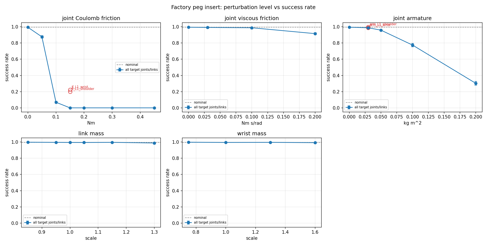

데이터 기반 문제 해결 ① 강화학습 기반 로봇 제어
낯선 기술을 빠르게 익히고, 서비스 성패를 가르는 핵심 변수를 데이터로 판단했습니다
서울대학교 DYROS 연구실 · Sim-to-Real Gap 완화 (참여연구원 · 2026.07 ~ 2026.08)
기술 과제 · 현실에 적용되지 않는 AI
시뮬레이션에서는 완벽하게 성공한 강화학습(RL) 정책이, 가상과 실제의 미세한 환경 차이로 인해 실제 로봇에서는 실패하는 ‘Sim-to-Real Gap’ 문제를 해결해야 했습니다.
분석 · 데이터 기반 핵심 변수 도출
정밀 조립 작업(Peg-in-hole)의 실패 데이터를 분석한 결과, 오류 패턴이 무작위가 아님을 발견했습니다. 5가지 물리 변수를 개별 통제하며 실험한 결과, 질량 변수의 영향은 미미한 반면 쿨롱 마찰 계수가 0.15Nm에 도달할 때 성공률이 0%로 급감하는 현상을 데이터로 증명했습니다.
검증 · 핵심 변수에 집중한 Gap 완화
핵심적인 변수만을 타겟팅하여 Gap 완화 기법인 도메인 랜덤화(Domain Randomization)를 적용했고, 0%였던 태스크 성공률을 95%까지 끌어올렸습니다.
0% → 95.5%
새로운 정책을 적용한
실제 로봇 환경에서의 작업 성공률
실제 로봇 환경에서의 작업 성공률
2개월
낯선 로보틱스 도메인에서
단기간에 이뤄낸 문제 해결
단기간에 이뤄낸 문제 해결


08